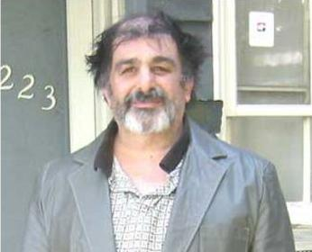

Заппа'zУх!Ой!
русский более или менее регулярный бюллетень для поклонников американского композитора
Frank'а Vincent'а Zappa'ы
Выпуск.52 (18 Сентября 2004)
Карлос Луис Заппата
Когда играют в матроса Железняка или партизана Ковпака, главное не сознаваться. Молчать, если поймали. Мужество ценится.
У взрослых уже другая шкала мер и весов. На первом месте чувство юмора.
Загадка этого интервью в том, что я не знаю, с кем имел дело. Так и не понял. С большим ребенком или с маленьким взрослым человеком. Шутит он так или ни за что Родину не продаст.
Даже задать прямой вопрос не было возможности. Младший брат FZ - Carl Zappa не пользуется Интернетом. Не имеет веб-страницы, email'а, или восьмизначного номера ICQ. Как настоящий подпольщик, конспиратор или лекомысленный гуляка. Свистун и балагур.
Все общение шло через племянника. Stanley Jason'а Zappa'у, сына Bob'и. Того самого, Чарльза Роберта, среднего из трех, что переучил брата-барабанщика, на брата-гитариста. Сын CRZ - SJZ, уж он-то определенно юморист. Упорно или неизменно звал меня не Владимиром, а Mr.Sovetov. Можно подумать, я за Буша голосовал. Багдад бомбил. Фашист. А когда я наконец пожаловался, что в самом деле ощущаю себя Дядей Сэмом на допросе Эрнесто Че Гевары, Stanley Jason тут же ответил письмом с Темой:
Carlos Louis Zappata
А само соотношение не изменилось. Нет. На десять строк вопросов - одна ответа. Шутка такая. Анекдот.
Впрочем, наверное. Родство с великим человеком, действительно, обязывает. Быть партизаном и Хазановым одновременно. Это называется скромность. Нас тоже кое к чему обязывает любовь к тому же самому великому человеку. Я так полагаю. Ну, например, воображение употреблять. Свое собственное. Чтобы ответить на вопросы, оставшиеся без ответа.
Скажем, такой. Просто не тянет узнать, что значат слова, которые тебе поручено повторять перед камерой? За разом раз. Или слегка немного опасаешься, что можно и роли лишиться за неуместное любопытство? Ага.
В любом случае, поблагодарим Карла Заппу, младшего брата нашего кумира, за предоставленную возможность. И Stanley Jason'а, кончено.
* * *
Владимир Советов: Мистер Заппа начнем, как и положено, с представления. Я это к тому, что все дети, сыновья и дочь, Francis'а Vincent'а и Rose Marie получили при рождение красивые полные имена, вы понимаете о чем я, Frank Vincent, Patrice Joanne и Charles Robert. Какое у вас второе имя? Нравится ли оно вам? Употребляете ли вы его, как это случалось делать вашим старшим братьям?

Карл Заппа: Мое второе имя Lewis (а вовсе не Louis, как в свидетельсте о рождении) Меня так назвали в честь дяди, который был убит в Балтиморе.
ВС: А когда и где вы родились? Помните ли вы ту нескончаемую цепь переездов - Monterey, Pacific Grove, Montclair, Claremont, San Diego и Lancaster, из которых состояло ваше детство? Веселое было время или не очень? Не хотите поделиться какой-нибудь занятной историей на эту тему?
КЗ: Я родился в Балтиморе, штат Мериленд, 10 сентября 1947 года. И, конечно, помню все те города, которые вы упоминули. С 1951 года я живу в Калифорнии, за исключением пары лет в Sarasota и Jacksonville, штат Флорида. Почти все это время в North Hollywood (31 год), а до этого с 1968 по 1972 в Burbank.
ВС: Вы на семь лет младше своего брата Фрэнка, не мешали ли такая большая разница в возрасте вам общаться? Были ли вы в курсе дел FZ конца пятидесятых, шестидесятых? Попадали вы на выступления ранних групп FZ? Может быть, бывали в печально знаменитой Cucamonga'ской Studio Z?
КЗ: Да, я был один раз в Studio Z, но в связи с чем уже не помню, как и самих обстоятельств того посещения. Я помню времена, когда Фрэнк играл в составе Blackouts. Они выступали в Pomona в таких заведениях, как "The Broadside" и "The Red Barn". Это были бары, и, я, как несовершеннолетний, не мог там бывать.
ВС: Ваш голос нельзя услышать в ранних записях FZ. Не испытывали ли вы что-то вроде зависти к барту Бобу, вовлеченному в музыкальные затеи Фрэнка? Вы, вообще, поете или играете на каком-нибудь иснтрументе? Можно ли рассчитывать на то, что где-то среди несметных сокровищ архива (FZ vault) прячется какая-нибудь пленочка Zappa brothers' trio или duo?
КЗ: Откровенно говоря, я не помню, чтобы Боб, был как-то вовлечен в в музыкальную жизнь Фрэнка. И я уверен, что нет и не было никаких записей Zappa brothers. Что касается меня самого, то я люблю петь, просто так, для собственного удовольствия.
ВС: Боб играл гитаре во времена Studio Z и записи с его участием можно услышать на CD The Lost Episodes. Но поговорим о иных временах и затеях. Помните ли вы съемки фильма Uncle Meat. Как это было, весело или скучно? И какой таинственный смысл скрыт в вашей знаменитой реплике "I used a chicken to to measure it"?
КЗ: Ну, конечно, я помню, с огромным удовльствием вспоминаю съемки фильма Uncle Meat. Это было здорово. А по поводу фразы "I'm using a chicken to measure it", я и сам хотел бы узнать, что она означает. Она была частью сценария. И я должен был ее все время повторять. Эти сцены снимались в бильярд-холле "Mr. Pockets Billards" на бульваре La Cienega в West Hollywood. В 1969 - 1970 я часто там бывал с Art'ом Tripp'ом и Ansley Dunbar'ом.
ВС: Помнит ли вы кого-то еще из тех, кто был среди актеров? Скажем, Calvin'а Schenkel'а или Motorhead Sherwood'а? Я думаю, что Sherwood'а вы должны были бы знать еще со времен вашего детства. Это так? Помните ли вы и Don'а Van Vliet'а той поры? Разрешалось ли вам заглядывать в комнату Frank'а, когда гостем в вашем доме был Don?
КЗ: Я помню Jim'а Sherwood'а. Думаю, он сейчас живет в Santa Cruz'е (как всегда возится с автомобилями). Все они и Jim, и Don, и Frank учились в одной школе - Antelope Valley High. А с Calvin'ом Schenkel'ом я познакомился позже в доме Фрэнка. Это было однажды летом. Я помогал ему лепить пластилиновые фигурки для мультфильма и асистировал при съемках.
ВС: В любом случае Motorhead Sherwood был штатным участником The Mothers и существует замечательный альбом с записями совместого концерта Beafheart'а и FZ. А почему так оказалось, что нет записей Заппы с другими Заппами? Насколько я помню, в первые годы существования собственного лейбла Straight/Bizarre Фрэнку не раз говорил о возможных Zappas family projects? Почему они не состоялись? Может быть все же были какие-то пробы, прикидки, идеи?
КЗ: Не знаю ни одной. Может быть, это просто одна из шуток Фрэнка?
ВС: Хорошо. И тем не менее, на одном из самых замечательных заловых альбомах FZ ваше имя, Mr. Carl Zappa, звучит со сцены. Я, конечно, имею в виду ROXY and Elsewhere. Вы были в зале или за кулисами? Что это были за носки и, вообще, какова история рождения фразы "Carl Zappa's socks". И, кстати, они по-прежнему сырые?-)
КЗ: А, да, это были мои носки. И сам я был в зале. Перед своим выходом на сцену Фрэнк сказал, что ему нужна пара белых спортивных носков и спросил, не может ли он их у меня одолжить? Все это было частью заранее спланированного представления.
ВС: И как это было? Что вы почувствовали, невольно оказавшись частью музыкального действа. Что вам понравилось больше всего?
КЗ: Самый приятным стало ощущение энергии целого зала. Все были в восторге, когда Фрэнка назвал мое имя. Это было замечательное чувство.
ВС: Кстати, по этому поводу, нет ли у вас какого-нибудь объяснения шуточной озабоченности Фрэнка вонючими ботинками и пахучими носками? Не было ли у вашей матери Rose Marie несколько преувеличнной страсти к наведению порядка в доме, не оказались ли вы, все ее дети, до некоторой степени жертвами этого гипноза сверх-чистоплотности? Фрэнк даже свою непомерную страсть к курению объяснял неприятием запахов. Чего-то стылого и несвежего. Было ли нечто такое враждебное, грязное и неопрятное, в вашем детстве? Или в детстве Фрэнка?
КЗ: Да, матери нравилось содержать дом в чистоте, но никакого полиэтилена на мебели или чего подобного у нас, конечно, не было. Что же до "враждебного, грязного и неопрятного" вообще, не думаю, что это стоит сейчас обсуждать.
ВС: ОК. Поговорим о других концертах Фрэнка. Я думаю, ROXY был не первым и не последним в вашей жизни. Так? Может быть, поделитесь какой-нибудь живописной гастрольной историей с нами, поклонниками творчества FZ?
КЗ: Помимо ROXY я видел еще три шоу, первое в Shrine Auditorium, еще одно в Royce Hall UCLA и последнее Santa Monica Civic Auditorium. Коцерт в Санта-Монике был заключительным выступлением турне 1980 года. Того самого, в котором застрелили Джона Леннона. Меры безопасности принимались такие, что перемещаться было не просто даже со специальным back stage пропуском. Командовал всем этим John Smothers. Помню, как он сам скрутил кого-то из фотографов. У Джона на затылке был такой жуткий шрам, как-будто от удара топором. Кстати, он сам тоже из Балтимора.
ВС: Ясно. Вернемся еще раз к концерту в ROXY и тем временам, когда ваша семья жила в Lancaster'е. Что-то вам говорят имена, которые упоминаются в песне "Village Of The Sun" - "Little Mary, and Teddy, and Thelma too"?
КЗ: Нет. Никого с подобными не знал и не встречал.
ВС: А помните ли вы тот день, когда Фрэнк привез в родительский дом свежую, только что отпечатанную копию, своего первого альбома "Freak Out!"? Как это все выглядело?
КЗ: Вообще, в те времена Фрэнк жил в Онтарио со своей первой женой Kay. И если честно, то я не могу припомнить никаких его визитов, связанных с выходом первого альбома.
ВС: Ваша младшая сестра Candy как-то с удовольствием вспоминала время, когда она выступала вместе с Матерями в ресторане вашего отца. Помните ли вы это заведение? Где оно располагалось и как выглядело? Может быть, и вам случалось петь c группой брата? С сестрой дуэтом?
КЗ: Ресторан назывался "The Pit." Я помню, что Candy пела "Long Tall Texan". А я как-то раз спел "Riot in Cell Block #9" вместе с Blackouts, но это было на Antelope Valley fair.
ВС: А где располагался "The Pit"? В Эл.Эй.? Адрес не припомните? Несколько человек после интервью с Candy интересовались, но ответа почему-то не получили.
КЗ: Я думаю, это было в Upland (California).
ВС: А какую музыку вы любите? Часто ли вы сами слушаете музыку своего брата? Есть ли у вас любимый альбом или фильм? Если да, то какой? И почему?
КЗ: Мой любимый альбом Фрэнка "Crusing with Ruben and the Jets". А вообще, я люблю Big Band Jazz, и классический, то есть старый R&B, группы ранних пятидесятых.
ВС: Да, да! "So fine. My baby's so dog gone fine, She loves me, come rain, come shine" Замечательная музыка. Именно ее вы и напеваете, когда бреетесь или готовите завтрак. Верно? Не Grand Wazoo?
КЗ: Имеено так. Все больше R&B, песенки "Oldies" радиостанций. Такие вот вещи.
ВС: Карл по утвержению одного из биографов FZ Neil'а Slaven'а вы были одним из членов коммуны в Log Cabin. Кто еще в нее входил? Помните ли вы Pamela'у Zarubica'у или кого-то из девушек, позднее вошедших в состав скандально известного GTO?
КЗ: Член коммуны? В Log Cabin я был всего лишь один или два раза. Хотя помню, что там действительно встречал Pam, известную еще, как "Suzy Creamcheese".
ВС: Не хотите что-нибудь занятное рассказать о ней? Если верить опубликованным отрывкам из ее дневников, она была влюблена в вашего брата Фрэнка. А он не отвечал взаимностью.
КЗ: На этот счет мне просто ничего неизвестно.
ВС: В то время, когла FZ и Материи завоевывали Нью-Йорк в 1967, где были вы? Безвыездно в LA или все-таки заезжали в гости к Фрэнку и Gail? Если да, то видели ли шоу Pigs and Repugnant?
КЗ: Все это время я жил в Burbank'е и в NYC не был.
ВС: А переезд брата на Woodrow Wilson Drive остался в памяти? Кто еще был в той большой компании, помимо Фрэнка, Гэйл и маленькой Moon Unite?
КЗ: Мне случалось заглядывать на Woodrow Wilson по выходным. Я помню, как мы там смотрели "Freaks" (давнее кино, 1933), и другие старые научно-фантастические ленты типа "Angry Red Planet," "War of the Worlds" и "Invaders from Mars" у Фрэнка в подвале. Он очень любил допотопные фильмы про монстров.
ВС: Можете ли вы что-то сказать о Pamela'е Miller, позднее ставшей Pamela'ой de Barres, автором скандальной 'I'm with the band'. Читали ли вы эту книгу? Есть ли там хоть слово правды?
КЗ: Я помню Pamela'у - она входила в состав GTO. А вот ее книгу не читал.
ВС: То есть, вы не были особенно близки к этой передовой девичьей команде. Ваш брат не одобрял контактов или просто ничего там интересного и не было?
КЗ: Нет, кое-кого я знал очень близко, например, Linda'у Sue "Sparky" Parker, просто я думаю, что стал там появляться уже после того, как Pamela уехала, а ее место заняла "Gabby" Ferguson.
ВС: Случалось ли вам читать что-либо из множества книг о вашем брате Фрэнке? Могли бы вы прорекомендовать какую-нибудь, достойную внимания? Ну и, конечно, само собой вопрос, как вам книга вашей сестры Candy 'My Brother Was A Mother'?
КЗ: Я видел книжку Greg'а Russo. И мне очень нравится книга Candy.
ВС: Да. Замечательная семейная история и я, надеюсь, наше интервью тоже кое-что добавило к этой саге. Большое вам спасибо.
Искренне Ваш, Владимир Советов
http://www.arf.ru/
| Домой | Заппа'zУх!Ой! | Поиск | Хозяин |